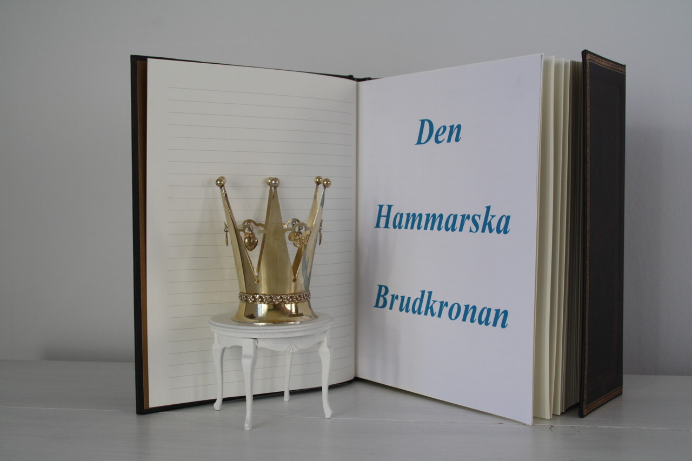

Brudkronan

Den Hammarska Brudkronan inköptes till den Hammarska Släktföreningen hos Kurt Ribbhagen AB i Stockholm, den 18:e juni 2012.
Brudkronan, som är av förgyllt silver, är tillverkad av juveleraren K & E Carlsson i Göteborg, vilket är en poäng med hänsyn till att släkten har sina rötter där.
Brudkronan är ingraverad med I 9, vilket innebär att den är tillverkad 1959. Mellan kronans sex spiror hänger berlocker, som bl.a. symboliserar tro, hopp och kärlek.
Brudkronan användes för första gången av Anna, f. Gyllenhammar, den 5:e oktober 2012, då hon gifte sig med Hugo Hammar i Finska Kyrkan i Stockholm.
Den som önskar använda kronan kan kontakta föreningens ordförande, Tomas Hammar.